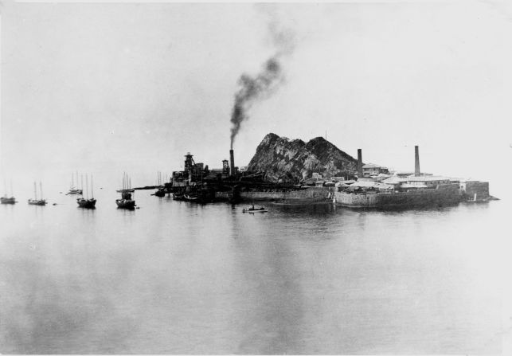

Introduction
Hashima Island, known locally as Gunkanjima or “Battleship Island,” is a mysterious concrete fortress rising from the East China Sea, about 15 kilometers from Nagasaki, Japan. The island earned its nickname because its long, hulking shape and grey, decaying buildings resemble a warship at sea.[1] Once a symbol of Japan's rapid modernization, Hashima’s now-abandoned ruins are a haunting reminder of a turbulent industrial past. For nearly a century, the island was a bustling mining community—an artificial world cut off from the mainland, with its own social life, culture, and dark secrets. Since being abandoned in 1974, the island has fascinated urban explorers, historians, and filmmakers, while also drawing international attention for its recognition as a UNESCO World Heritage Site and the complex, often painful, history behind its concrete walls.[2]
Industrial Growth and Peak
The story of Hashima begins in 1810, when coal was first discovered on the island’s rocky outcrop. In 1890, the Mitsubishi Corporation purchased the island and began to transform it into a state-of-the-art coal mining operation.[3] Over the following decades, massive concrete apartment blocks, schools, a hospital, and even a pachinko parlor (Japanese arcade) were constructed to support a growing workforce and their families. By the 1950s, Hashima boasted one of the highest population densities ever recorded, with over 5,000 people packed onto just 6.3 hectares (roughly the size of 9 soccer fields).[1]
The mine operated 24 hours a day, extracting high-quality coal from deep beneath the seabed. This coal helped power Japan's industrial expansion and navy—especially during World War II and the rapid economic growth of the postwar era. On Hashima, almost every aspect of daily life was designed to maximize efficiency. The entire island was enclosed by a sea wall to protect against frequent typhoons, and its signature multi-story apartment blocks were among the first of their kind in Japan, reflecting both necessity and innovation. The success of Hashima mirrored the rise of industrial Japan, but also came at great human cost.
Life on the Island
Daily life on Hashima Island was a mix of hardship and surprising comfort. While cramped conditions and harsh weather were unavoidable, Mitsubishi tried to provide workers with a sense of community and stability. The island had everything: a hospital, school, communal bathhouses, a rooftop garden, shops, a cinema, and a temple. Children attended school in uniform and played on rooftops, while families visited the communal bathhouses after long shifts. There was no private transportation; everyone walked the narrow concrete corridors and stairwells, and elevators connected the higher floors.[6]
Meals were served in large canteens, and fresh water was shipped in by boat, as the island had no natural springs. Entertainment included karaoke nights, movies, and sports competitions. Despite the concrete environment and frequent storms, residents found ways to create a unique island culture, celebrating festivals and forging friendships that endured even after the island was evacuated. For many, Hashima was both a challenging workplace and a tight-knit home.
Korean and Chinese Forced Labor
Behind Hashima’s achievements lies a darker history. During World War II, as Japan’s labor shortage worsened, thousands of Korean and Chinese workers were forcibly brought to the island and compelled to work under brutal conditions.[4] These laborers faced long hours in dangerous tunnels, with little food, poor medical care, and frequent abuse from supervisors. Many died from accidents, malnutrition, and exhaustion. Survivor testimonies describe a “prison-like” existence, with workers sometimes confined to cramped barracks and denied basic freedoms.
"We were treated like machines, not human beings." — Korean survivor testimony
After the war, many of these stories were suppressed or ignored in mainstream Japanese accounts of the island’s history. However, in recent decades, survivors and their descendants have spoken out, sharing their experiences through interviews and documentaries. Their stories remain central to debates over how Hashima’s history should be remembered and taught.[4]
Abandonment and Modern Rediscovery
The 1970s marked the end of the coal era in Japan. As oil replaced coal as the nation’s primary energy source, the mine closed suddenly in 1974, and all residents were evacuated within weeks. Personal belongings, furniture, and even toys were left behind. The once-thriving community became an eerie ghost town almost overnight, its buildings battered by typhoons and sea spray.[2]
For decades, Hashima was off-limits, and its silent ruins were gradually reclaimed by nature and the sea. In the early 2000s, the island was reopened for controlled tourism, attracting photographers, urban explorers, and film crews. In 2012, the James Bond film "Skyfall" used Hashima’s haunting silhouette as inspiration for the villain’s lair, introducing the island to a global audience. Today, tour boats depart from Nagasaki, allowing visitors to safely walk parts of the ruined island and imagine its former life.[7]
Preservation, Tourism & Pop Culture
Preserving Hashima is an ongoing challenge. The buildings, exposed to salty winds and violent storms, are slowly crumbling. The Japanese government and local authorities have reinforced walkways and added safety barriers for visitors, but much of the island remains too dangerous to access. UNESCO World Heritage status has brought new attention—and controversy—about how the site’s history is presented, especially regarding forced labor.[5]
Hashima has inspired books, documentaries, anime, and video games, becoming a symbol of both technological progress and the hidden costs of industrialization. TV specials and exhibitions in Japan and Korea have helped spark international discussion about the island’s past. Today, guided tours strive to balance the story of engineering achievement with the voices of those who suffered on the island. For many, Hashima stands as a cautionary monument: a place where progress and pain are inseparable.
UNESCO Controversy & Korea–Japan Dispute
In 2015, Hashima Island was designated as a UNESCO World Heritage Site as part of the “Sites of Japan’s Meiji Industrial Revolution,” recognizing its role in Japan's rapid industrialization.[5] However, the decision sparked strong objections from South Korea, China, and human rights groups, who argued that Japan was downplaying or omitting the history of forced labor on the island.
After international criticism, Japan agreed to take measures to ensure the full story of the site was told, acknowledging that Koreans and others “were brought against their will and forced to work under harsh conditions.”[8] In 2021, a UNESCO panel found that these commitments were not fully met, requesting Japan to take corrective steps and improve its exhibits and educational materials. The issue remains a point of diplomatic tension, reflecting broader questions about historical memory and reconciliation in East Asia.
“The site must fully convey the complete history, including the experiences of Koreans who were brought to Hashima and other facilities against their will.” — South Korean Ministry of Foreign Affairs
Historical Timeline
1810
Coal is first discovered on Hashima Island.[1]
1890
Mitsubishi purchases the island and begins intensive coal mining operations.[3]
1940s
Thousands of Korean and Chinese laborers are forced to work under harsh conditions during World War II.[4]
1959
Population peaks at over 5,000 residents, making it one of the densest places on earth.[3]
1974
Mine is closed and the island is evacuated.[1]
2015
Hashima is designated a UNESCO World Heritage Site as part of Japan’s Meiji Industrial Revolution.[5]
Sources
- NHK World: Battleship Island: The Dark Past and Present
- BBC Travel: The haunting ruins of Japan’s Gunkanjima
- The Guardian: Life on Hashima, the island that time forgot
- Human Rights Watch: Japan/UN: Address Forced Labor on Hashima
- UNESCO: Sites of Japan’s Meiji Industrial Revolution
- Atlas Obscura: Hashima Island (Gunkanjima)
- CNN Travel: Inside Hashima Island
- Brookings: Battleship Island (Hashima) and the pain of history
- Japan National Tourism Organization
- Yonhap News via Visit Korea